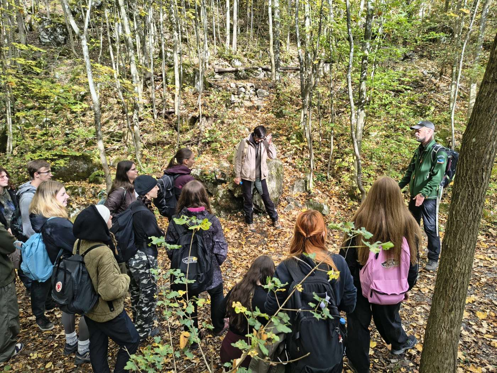
Ve středu 14. října 2026 vyrazilo 33 studentů nově otevřeného oboru Integrovaná ochrana přírody na Mendelově univerzitě v Brně na celodenní terénní exkurzi do CHKO Moravský kras. Den strávili se dvěma dobrovolnými strážci přírody a na vlastní kůži si vyzkoušeli, co jejich práce obnáší.
Úvod na obecním úřadě
Po příjezdu autobusem do Ochozu u Brna začal program na obecním úřadě. Zhruba půlhodinová prezentace studenty uvedla do činnosti dobrovolné stráže přírody. Ta pomáhá hlídat místa, kde je tlak návštěvníků na přírodu největší. Strážci kontrolují dodržování pravidel v chráněném území, vysvětlují návštěvníkům, proč tato pravidla platí, a snaží se předcházet škodám dřív, než vzniknou. Jejich práce je tak z velké části o komunikaci s lidmi, ne jen o pobytu v přírodě.
Dva okruhy po Moravském krasu
Po úvodu se studenti rozdělili do dvou skupin a vyrazili do terénu. Každá skupina prošla dva okruhy, dohromady zhruba 10 km, se zastávkami na místech, která jsou klíčová pro kontrolní činnost strážců.
Trasa vedla údolím Říčky a jeho okolím, tedy jednou z nejnavštěvovanějších částí Moravského krasu v blízkosti Brna. Právě tady je dobře vidět, jakou zátěž může turismus pro přírodu představovat: sešlapané svahy, vyšlapané zkratky mimo značené cesty, odpadky nebo rušení zvěře. Studenti tak mohli porovnat to, co slyšeli při úvodní prezentaci, s tím, co sami viděli v terénu.
Strážce, nebo nevhodně se chovající návštěvník?
Na jednom z míst přišla na řadu modelová situace. Část studentů se ujala role strážce přírody, ostatní hráli návštěvníky, kteří se v chráněném území chovají nevhodně.
Taková scénka zní jednoduše, v praxi ale vyžaduje hodně citu. Strážce musí umět návštěvníka oslovit klidně a s respektem, srozumitelně vysvětlit, v čem je problém, a ideálně ho přesvědčit, aby své chování sám změnil. Díky výměně rolí si studenti vyzkoušeli obě strany takového rozhovoru.
Uvidíme se znovu
Setkání studentů se strážci přírody se uskuteční i příští rok. Projekt tak bude dál propojovat výuku budoucích odborníků na ochranu přírody s praxí přímo v terénu. Podrobný program exkurze najdete v původní pozvánce.
Fotogalerie z exkurze
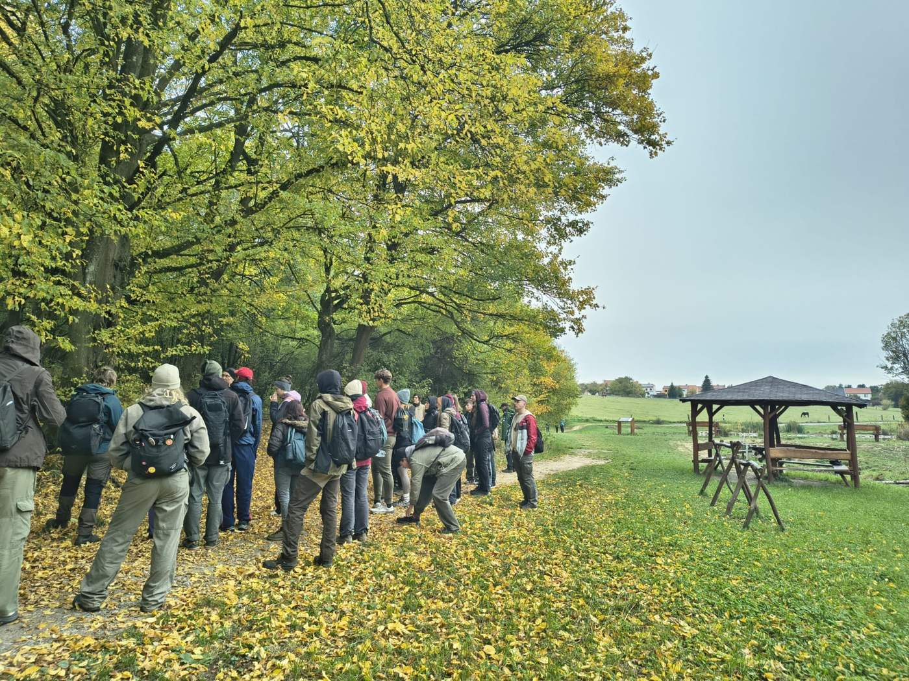
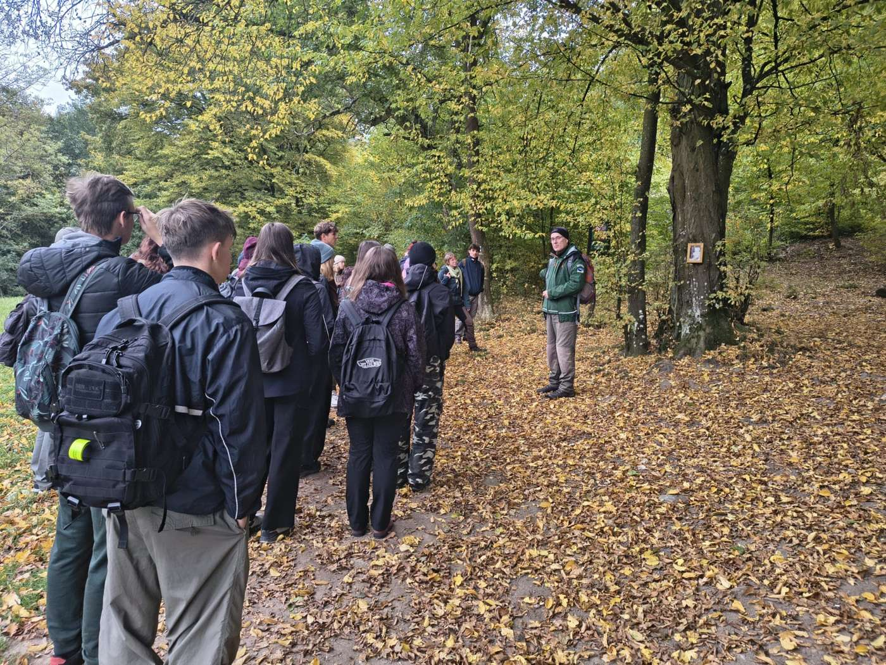
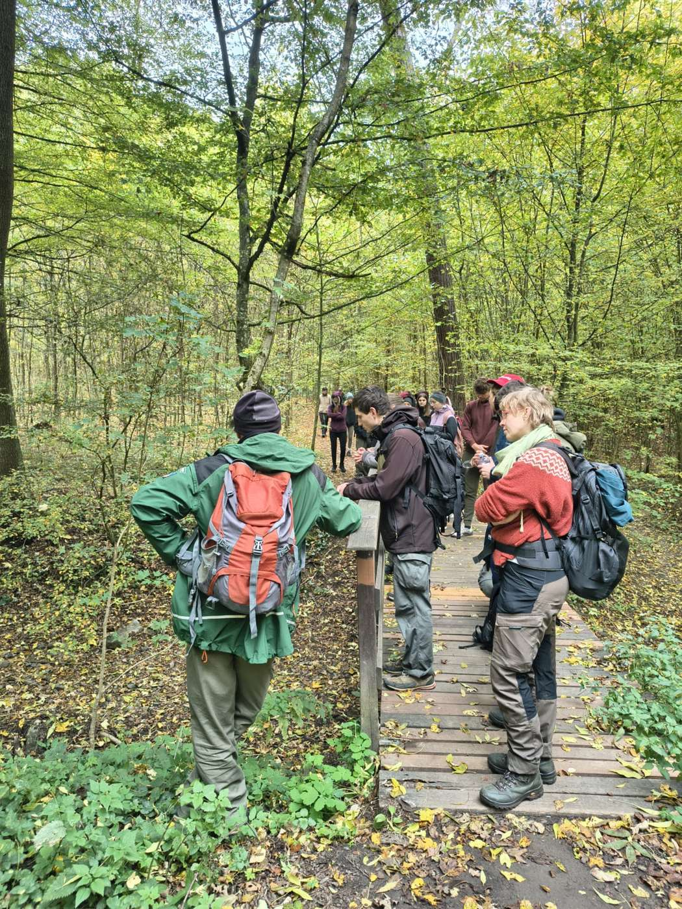
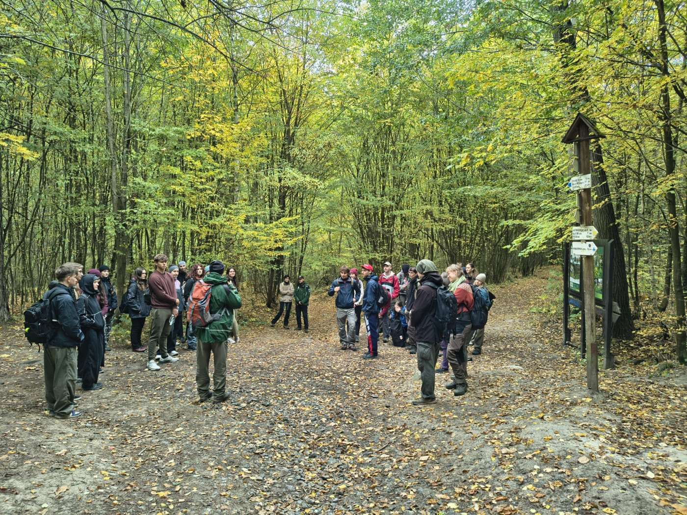
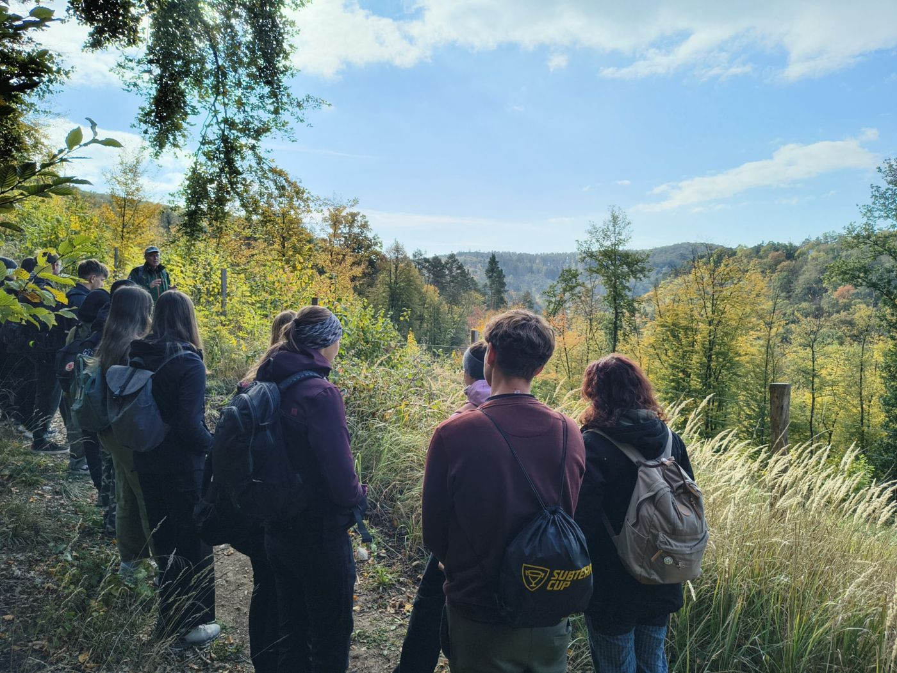
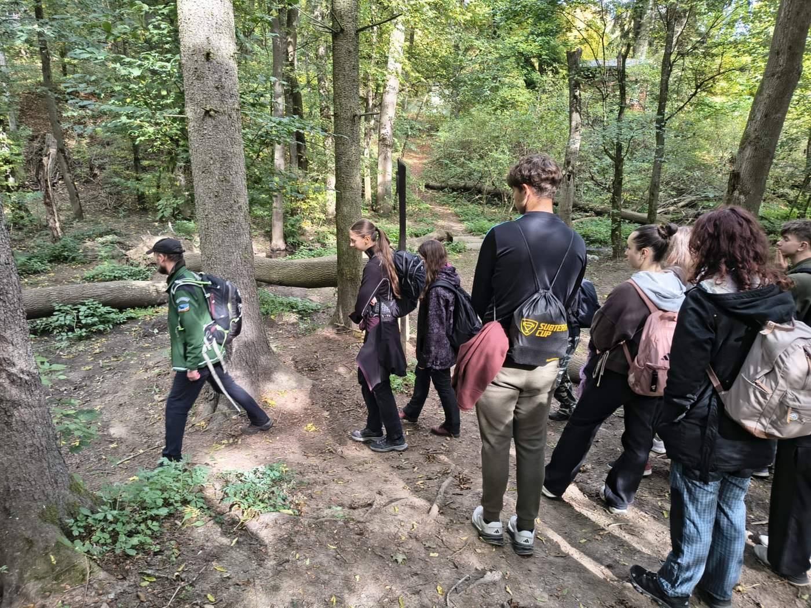
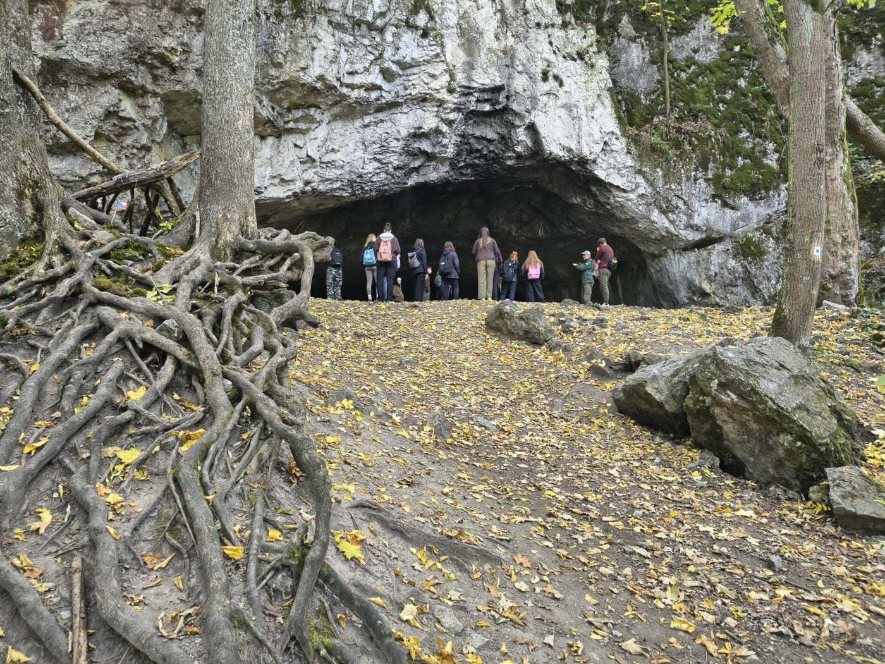
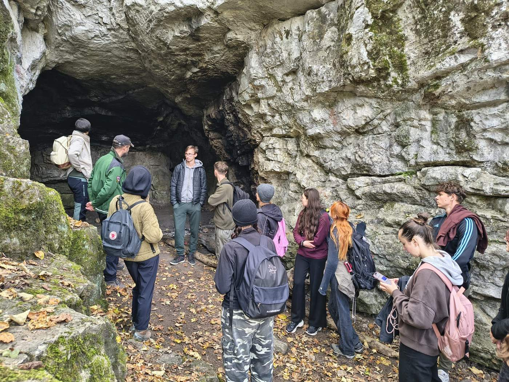
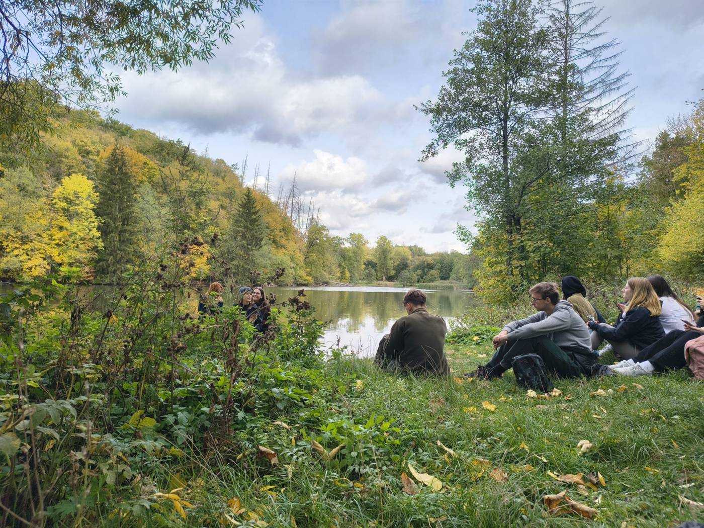
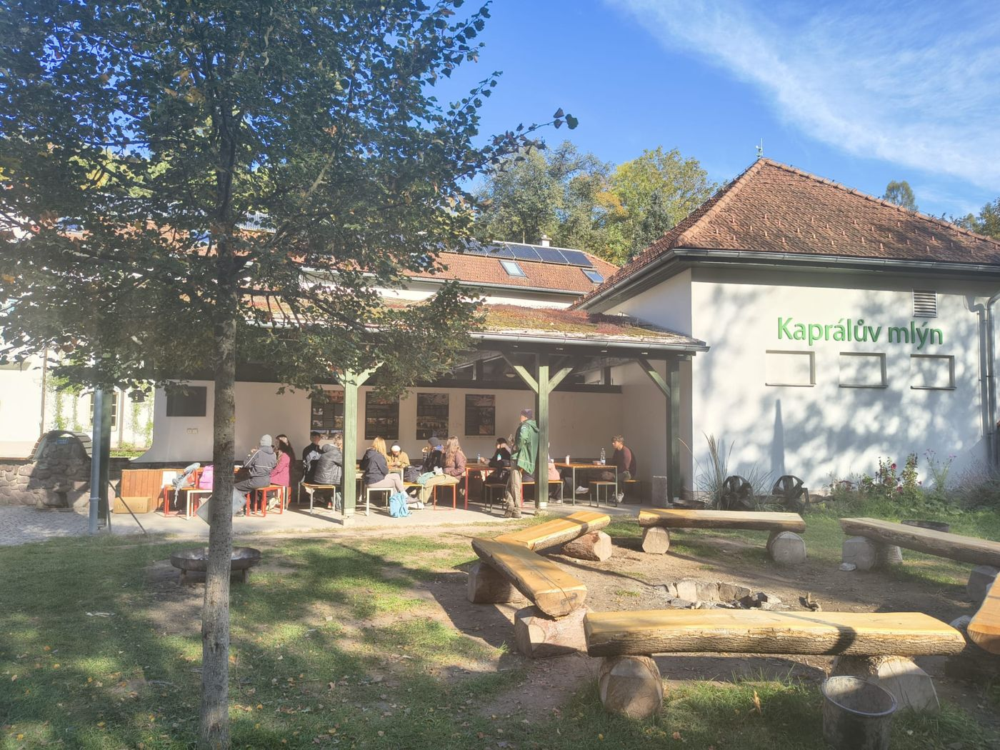
O projektu
Exkurzi připravil projekt „Ochrana cenných ekosystémů a řízení udržitelné turistiky v okolí Brna“, který je realizován s finanční podporou v rámci Programu Švýcarsko-české spolupráce. Realizátorem je Atregia s.r.o. ve spolupráci s Mendelovou univerzitou v Brně, ASITIS s.r.o., KAVYL, spol. s r.o. a švýcarským partnerem WSL.
Podpořeno švýcarským příspěvkem na snižování hospodářských a sociálních rozdílů v EU.

Chcete vědět víc?
Přečtěte si, jak projekt pracuje s návštěvností Moravského krasu a proč vzniká Plán udržitelného turismu.